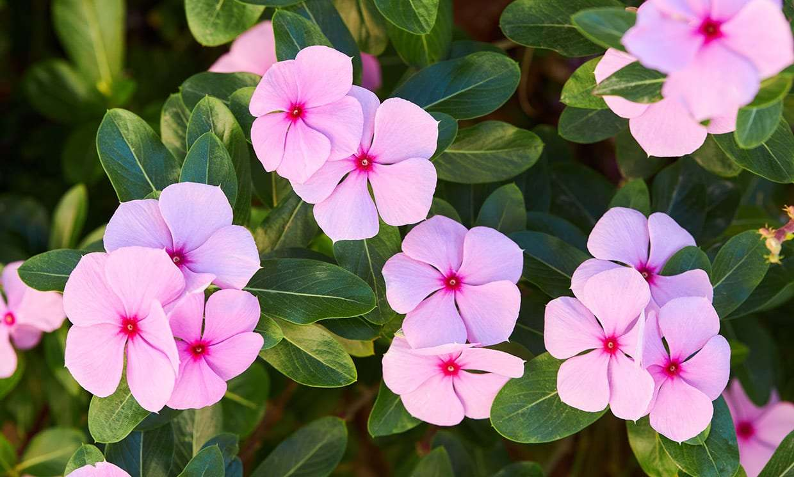

"lo más natural"
• Las huellas digitales de un koala son tan parecidas a las de los humanos que a veces se confunden en escenas de crimen.
• Los pulpos tienen tres corazones y son capaces de cambiar de color para camuflarse.
• Los elefantes son los únicos animales que no pueden saltar.
• A un perezoso le lleva dos semanas digerir su comida.
• Las jirafas tienen la misma cantidad de huesos en el cuello que los humanos, pero sus vértebras son mucho más largas.
1. La Grayi Diphylleia es una flor de pétalos transparentes originaria de Japón.
2. La cafeína es un insecticida natural producido por las plantas para matar a los insectos que tratan de alimentarse de ellas.
3. La Selaginella lepidophylla es una planta capaz de sobrevivir incluso perdiendo el 95% de su agua y es capaz de "resucitar" varios años después aun estando seca.
4. La Wolffia Angusta es la planta más pequeña del mundo, acuática y no llega a pesar más de dos microgramos.
5. El árbol más alto del mundo mide 115 metros de altura.
6. Existen más de 390,000 especies de plantas conocidas en el mundo.
7. La sequoia gigante es una de las formas de vida más grandes y antiguas de la Tierra, con ejemplares que pueden vivir más de 3,000 años.
8. Algunas plantas tienen la increíble capacidad de "moverse" o inclinarse hacia la fuente de luz.